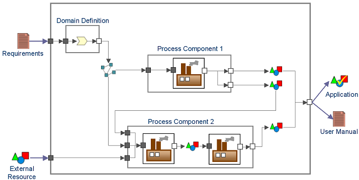

Activity: Eliciting The Main Production Process
Purpose
The purpose of this activity is to:
- Define the conceptual software production process with the input / output assets.
The interest of this activity is to:
- Elicit and ensure the consistency and completeness the production process.
- Identify the manual and automated phases.
- Identify the value chain between the different parts of the production process.
- Identify the value chain with external production process chains.
- Identify the critical production points, strengths and weaknesses of the production process.

Figure 1. Example of conceptual software production process
Inputs
Inputs of this activity are:
- Requirements of the current production process.
- Cartography of the software production processes.
Outputs
Outputs of this activity are:
- Conceptual software production process.
- Roadmap to realize the production process.
- Plan to federate development of production processes.
Work Guidelines
This activity must:
- Identify the software supply chains where the current production process is implied.
- Identify the added value of the current production process.
- Identify the sharable values with other production processes.
This activity is a first input to elicit or consolidate a software production process framework.
When a process reconfiguration is needed, an urbanization plan (with automating and manual development tasks) of the software production processes must be provided.